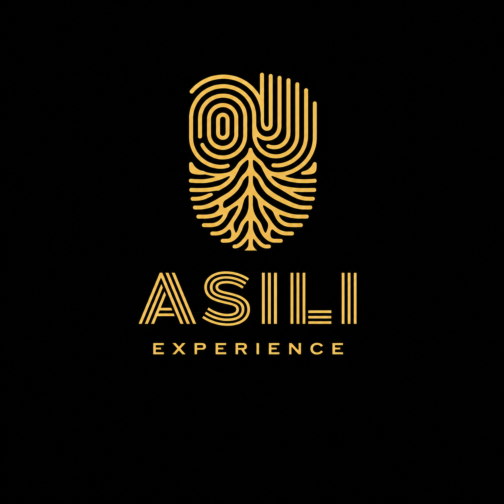
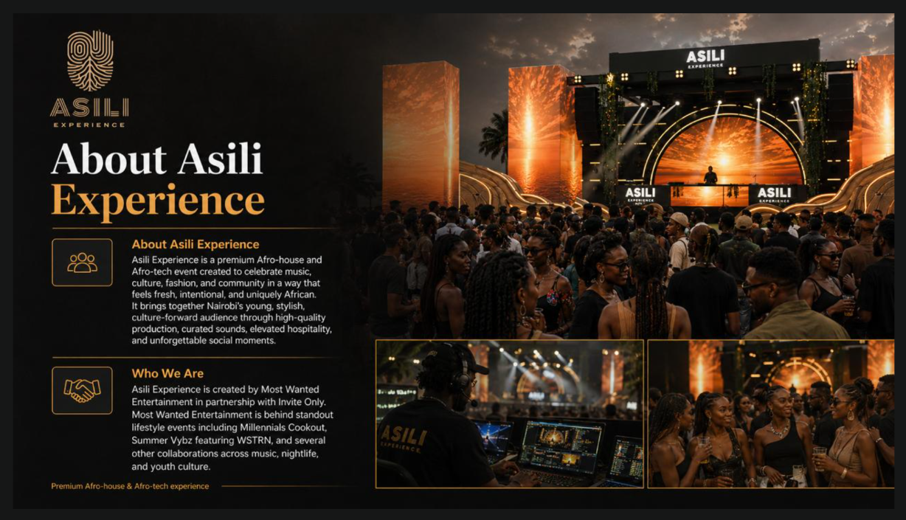
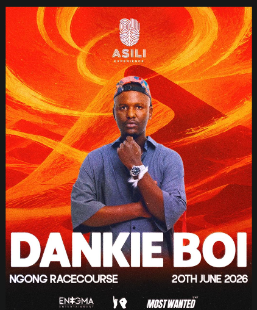
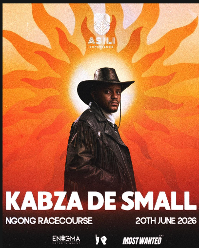
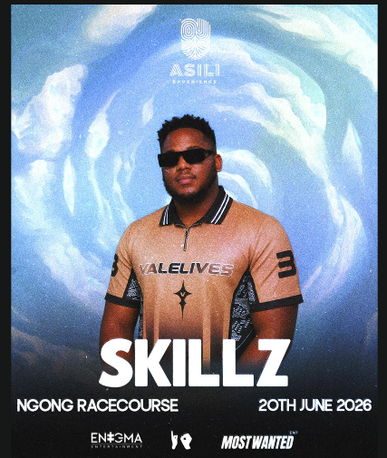
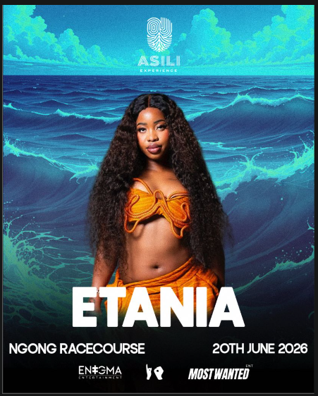
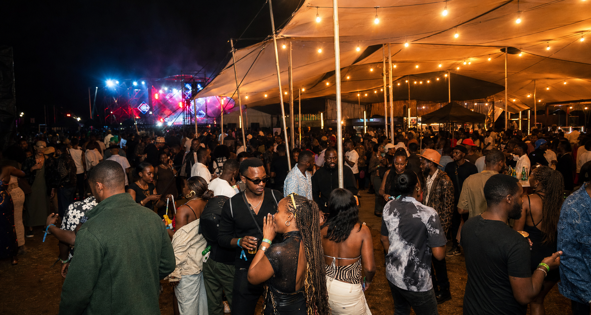
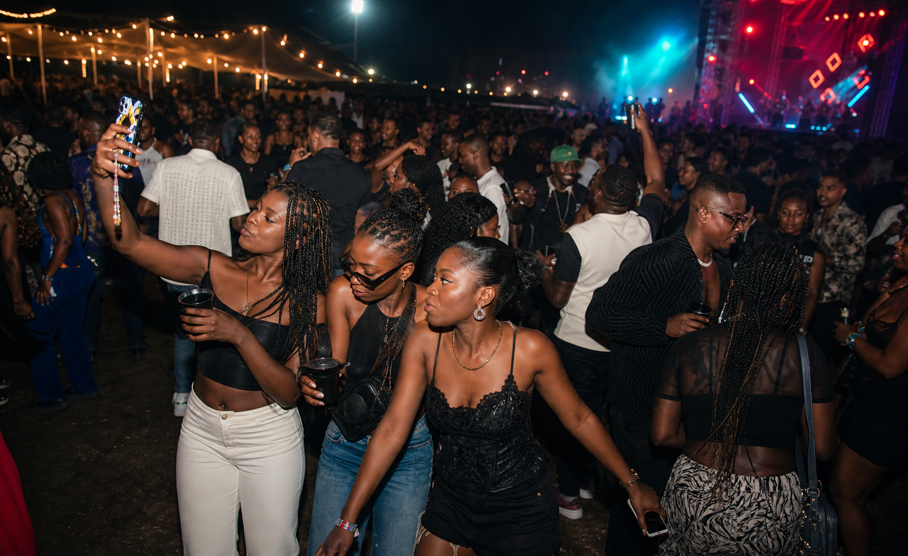
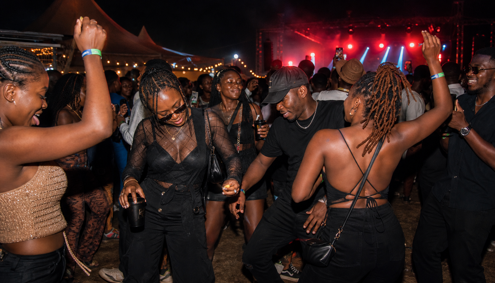

Main Stage
Heavy lighting, big sound, and an open-air Ngong Racecourse stage designed for a midnight peak.

Get Tickets
An Oontz Event
Where rhythm meets roots. Where strangers become tribe. A ritual, a frequency, and a feeling built for the ones who arrive open and leave connected.
The countdown
About ASILI Experience
ASILI Experience celebrates music, culture, fashion, and community in a way that feels fresh, intentional, and uniquely African.
Created by Most Wanted Entertainment in partnership with Invite Only, the event brings Nairobi's stylish, culture-forward audience into one curated night of high-quality sound, hospitality, and unforgettable social moments.




Where rhythm meets roots.
Where strangers become tribe.
A ritual. A frequency. A feeling.
One ground. One pulse. One night at Ngong Racecourse.
Main stage
Designed for the night peak at Ngong Racecourse, with warm light, heavy sound, and clear views from the floor.
Experience
Heavy lighting, big sound, and an open-air Ngong Racecourse stage designed for a midnight peak.
A warm meeting point for conversations, photos, drinks, and the tribe between sets.
Fast access to drinks inside the grounds, with clear flow from the dance floor.
Photo-ready zones and creator-friendly moments built into the event flow.

Warm lights. Shared tables. One ground, one pulse, one night at Ngong Racecourse.


Gallery mood
Event guide
All passes are available through Most Wanted on HustleSasa.
We will have enough trained security on site, plus controlled entry and support points around the venue.
Bars and food vendors will be available inside the event grounds.
Your ticket confirmation, charged phone, good shoes, and the right energy.
Come ready for a June night outdoors at Ngong Racecourse.
Brands we are working with
Event info